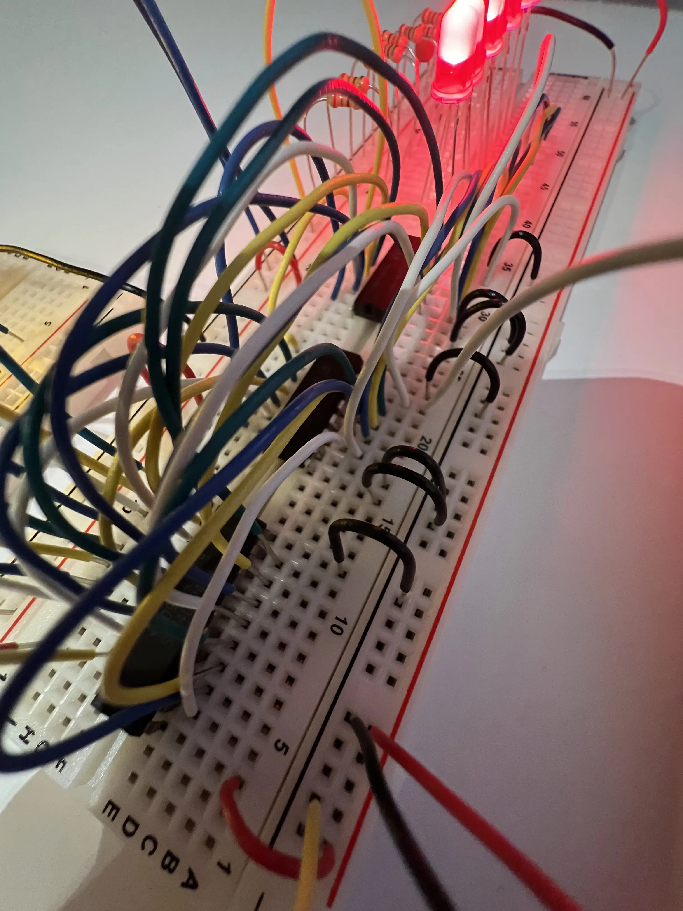

Registers and Buses
Registers are a fundamental building block of computers, they are used to store data. We will be building three registers, an A, B, and instruction register. The A and B registers will be feed into the ALU, and the instruction register will be used later when we implement the control logic. The bus is a collection of wires that provide a common connection point for the components. It allows us to do bus transfers, or move data from one part of the computer to another.
Part 1 - Building the A Register
For this part we are going to build our first register. Here is the schematic.
That was a lot of wiring, but here it is complete! I have enable set which is why the contents of the register are being placed on the bus (the yellow LEDs).
And here is a close up shot.

How this works
The three major components are two 74LS173 4-bit D registers, and one 74LS245 8-bit bus transceiver. The two 4-bit D registers are used to store the data, and the 8-bit bus transceiver is used to get and send data on the bus.
First let's start with the 74LS173, the main components are the 4 D flip-flops. Here I have created one of the sections in logisim to show the core layout. The first part to start at is the M, N inputs; these give you the ability to control the outputs of the chip but we set them to ground (pins 1 and 2 - setting the output to always on), these are connected to inverters going to an AND gate, and the output to a controlled inverter.
Next are the clear and clock line which connect directly to the D flip-flop. When the clear line is set the D flip-flop is set to 0. The clock is used in combination with the data enable and data line. When the data enable is set to low the data line is able to pass its value to the D flip-flop and is stored on the rising edge of the clock.
The output $\overset{\_}{Q}$ is connected to a controlled inverter which is the final output from the register. The output Q goes to the top AND gate and will feed the same input back into the D flip-flop. This means when the data enable is set high the top AND gate feeding into the OR gate will feed whatever is in the D flip-flop back into it. So if you turn on the clock and the data enable is high (off) it will keep the same value.
This configuration is essentially duplicated four times, with the clear, clock, reset, and output control (M N) lines being shared. You can see the logic diagram here.
Now what about that D flip-flop lets see how that works. There are several ways to configure this, but here is one way using NAND gates. Here the set and reset lines are active low. The set can be used to override set a 1, but it is never used.
The next major part is the 74LS245 a 8-bit bus transceiver. This component is fairly simple and easy to implement. However, there is one difference in this version, which is that the A and B pins are I/O pins. This is not easy to do in logisim so I just made separate input and output pins. Just for clarity, what this means is that the output from pin A1 would go directly to B1, instead of going to pin OA1 which does not exist.
The top two AND gates are just for controlling which of the buffers are activated. When OE is off, turning the DIR line high or low sets the direction from either A->B when high or B->A when low. Turning the OE high sets both AND gates to be false, preventing any output.
A note on tri state logic: We have seen two circuits that make use of controlled buffers, or controlled inverters. This is known as tri state logic because they can be in three states, either on, off, or disabled. The reason this is necessary is because when we put everything together the components will share the same bus lines. Putting a 0 on the bus seems fine, except it sinks current and causes interference on the bus. So we actually need these components to be putting "nothing" on the bus when we disable their outputs. This is why switching the direction from A->B to B->A causes the outputs from A to OA to become U, because the output is disabled. This will make more sense when everything is connected to the bus.
Why use the 74LS245 at all? We can get the outputs from the registers directly and we have a way of controlling the output enable, so why are we using the 74LS245? This is correct, and technically we could just use the registers. However, this would mean the only time we would get to see the contents of the registers is when we output them onto the bus, which makes diagnosing issues and keeping track of what the computer is doing difficult. So instead we have the registers always output their contents so we can see them on the LEDs and use the 74LS245 to decide when to put those contents on the bus.
Part 2 - Building the B Register
Time to build the other register, this has the same schematic as the A register.
And here it is! The wiring is a lot cleaner this time.
Here it is close up.
Part 3 - Building the Instruction Register
This is the last register we have to build! The schematic is slightly different as the most significant four bits are not output onto the bus. This is because they will be going into the instruction decoder. Here is the schematic.
Here it is!
And up close.
Part 4 - Building the ALU
What is an ALU: ALU stands for arithmetic logic unit, it is able to perform math operations. Our ALU will be able to add and subtract 8 bit numbers. It can also dump its contents onto the bus.
This is the schematic.
Had to be very careful with this one. Here it is performing 1-8=-7 using 2's complement.
To get the LEDs on was a tight fit, here is a close up.
How This Works
Before we get going on explaining the circuitry let's start with looking at negative numbers in binary, and a few of the problems. The first is using a sign bit, let's say we have 3 bits and we decide to use a sign bit, here's what it would look like
Using sign bit:
111 = -3
110 = -2
101 = -1
100 = -0
000 = 0
001 = 1
010 = 2
011 = 3This seems fine, but let's see what happens when we add -1 + 1
101
001 +
---
110 (-2)So -1 + 1 equals -2, that doesn't make any sense. So instead let's do 1's complement and see what happens. With 1's complement we just invert the bits of the positive numbers to get the negative numbers.
Using 1's complement:
100 = -3
101 = -2
110 = -1
111 = -0
000 = 0
001 = 1
010 = 2
011 = 3Now let's try adding -1 + 1
110
001 +
---
111 (-0)So now we are getting -0, which makes more sense. Now let's try 3 + -2
011
101 +
---
000 (0) - Ignore carry bitWe get 0, which is close, but slightly off. Let's try 3 + -1
011
110 +
---
001 (1) - Ignore carry bitWe get 1, which again is close, but off, but if you look there is a pattern.
The pattern is that if we shift down 1 we get the expected value. So one below 111 (-0) is 000 (0) which is what we expect when adding -1 + 1. One below 000 (0) is 001 (1) which is what we expect when adding 3 + -2. One below 001 (1) is 010 (2) which is what we expect when adding 3 + -1. It turns out this is true in general. This means if we add one to each of these values we get the expected values, this brings us to the 2's complement.
Using 2's complement:
100 = -4
101 = -3
110 = -2
111 = -1
000 = 0
001 = 1
010 = 2
011 = 3Now, let's try doing those additions again. Starting at -1 + 1
111
001 +
---
000 (0) - Ignore carry bitLook at that we are getting 0! Now let's try 3 + -2
011
110 +
---
001 (1) - Ignore carry bitWe get 1! Let's try 3 + -1
011
111 +
---
010 (2) - Ignore carry bitWe get 2! So as you can see using 2's complement fixed our previous issue. This is why 2's complement is used, and we will use it to perform subtraction.
So now let's take a look at the circuitry. The major new component is the 74LS283, which is a 4-bit full adder. There are several ways to make a 4-bit full adder, but here is how one of the additions is done on the 74LS283. You chain these together to create a 4-bit full adder (or more), if you want to see the full logic diagram it is available here.
The key to note is that this has a carry in pin, and a carry out pin. So to chain these together to make an 8-bit adder all we do is connect the carry out pin to the carry in pin of the next 4-bit adder and we have an 8-bit adder. So that is addition, now what about subtraction.
Well, as we went over earlier all we have to do for subtraction is convert the bits to 2's complement and add them like normal. Performing 2's complement only requires two steps, first inverting the bits, and second adding one to them. To invert the bits we just use XOR gates, and connect one of the bits to our subtraction line.
XOR truth table
I = input bit, S = subtract bit, O = Output
I S | O
-------
0 0 | 0 <-- Subtract bit is off so the input bit is just passed through
1 0 | 1 <-- Subtract bit is off so the input bit is just passed through
0 1 | 1 <-- Input bit is 0, subtract bit is 1, we invert input bit to get 1
1 1 | 0 <-- Input bit is 1, subtract bit is 1, we invert input bit to get 0Which is this part (only showing two of the inputs):
The subtract bit is also passed into the carry in bit of one of the adders, so if it is a 1 that means we effectively add 1 to the input bits (which have been inverted), which means they are now 2's complement, pretty neat!
Well that wraps up the ALU and registers, in the next part we will build the RAM and Program Counter!